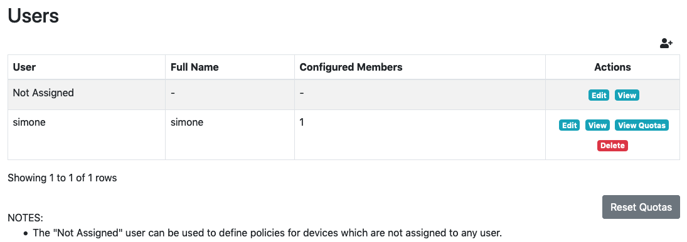

Policies
With nEdge policies is possible to set up customized rules to block or limit users traffic.
Policies are available with three granularities:
User application policy: provides rules on user applications
User category policy: provides rules on user categories
User fallback policy: provides a default rule for the user
Application/Category Policy

User policies configuration page
A application or category policy has the following fields:
The policy: it specifies if the application traffic should be limited or blocked
A daily traffic quota: a limit for the specified application daily traffic
A daily time quota: a limit for the specified application daily time usage
Quotas
All the quotas are reset daily at midnight. Quotas cannot be applied to the “Not Assigned” user.

Active user quotas can be reviewed by clicking the “View Quotas” button for a user in the Users page.
A given application or category quota will be shown only if there has been some traffic for it since midnight. It is possible to reset all the user quotas manually by clicking the “Reset Quotas” button.
Priority
The policies are applied with the following priority:
If a application policy is defined, the application policy is applied
If the application policy is set to Default and a category policy is defined, then the category policy is applied
If both the application and category are set to Default, then the Fallback Policy of the user is applied
As an example, supposing a Social Network policy is set to Slow Pass, and a Facebook policy to drop, all the Facebook flow will be dropped, while other social networks like Twitter will pass and they will be limited according to the Slow Pass bandwidth class.
There is an easy way to verify which policy would be applied to some application, the Policies Test page.

Policies Test page
Max Flow Size
You can specify a maximum flow size over which a flow will be blocked automatically. If the value is set to 0 (zero) no block is applied.
In this case you enable the flow check “Policy Violation” an alert is generated whenever a flow is blocke due to maximum flow size.
Dynamic Blacklist
You can define per-user blacklists based on max flow size blocked flows.

Example if a flow from host A (user A1) -> host B (userd B1) exceed the specified max flow size for user A1, host B is added to dynamic blacklist. This means that future flows that target host B will be automatically blocked thanks to this dynamic blacklist. The blacklist is not persistent across restarts and it can be flushed clicking on the flush button.